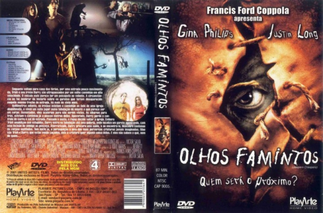

Olhos Famintos (2001)


Quem será o próximo?

Avaliação (TMDb):


6.4/10 (1.9K votos)
Avaliação (Usuário):
Outro Título:Jeepers Creepers
País:United States, 90 minutos
Idiomas falados:Inglês, Português
Gênero(s):Terror, Suspense
Diretor(s):Victor Salva
Codec:MPEG-2 (DVD)
Número: 4182
Sinopse:
Trish (Gina Phillips) e seu irmão Darryl (Justin Long) descobrem algo horrível no porão de uma igreja abandonada. Agora, em viagem de carro de volta para casa, eles são o alvo de uma força indescritível que deseja acabar com eles de qualquer maneira.
Elenco:
Gina Philips, Justin Long, Jonathan Breck, Patricia Belcher, Eileen Brennan, Brandon Smith, Peggy Sheffield, Jeffrey William Evans, Patrick Cherry, Jon Beshara
Tipo de mídia: DVD5,
Legendas: Inglês, Português,
Alugado: Não
Tela: 1.85:1